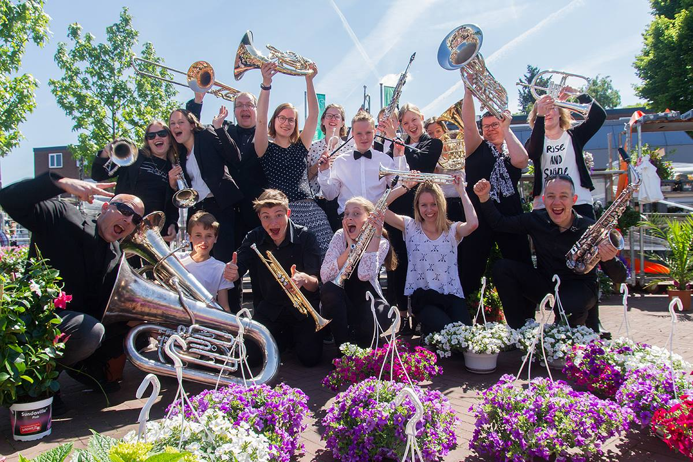
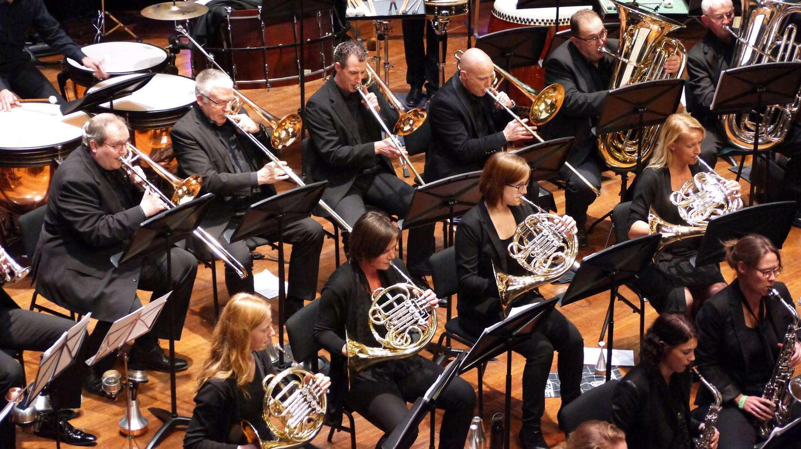
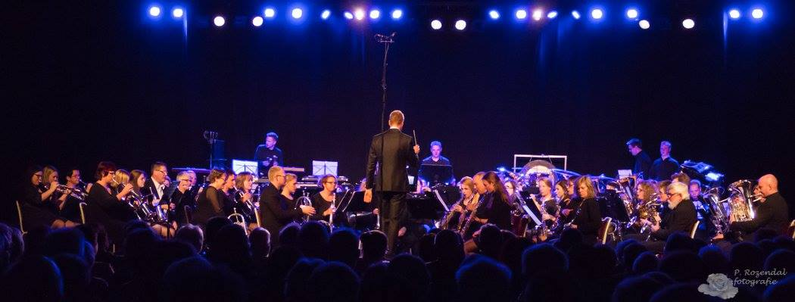

My musical story
When I grew up, both of my parents played in the local fanfare orchestra, Eendracht Eerbeek. My mom played the flugelhorn and my dad played the trombone. The orchestra was (and still is) a very tight knit group of people, so me and my younger brother were often found at parties, concerts and youth activities. When I was 5 or 6 years old, I started playing the recorder, like most young kids used to before picking a more permanent instrument. When I was eight, I was ready to start playing a larger instrument and I chose the horn because one of my friends played it. I wasn't really sure what a horn was but I didn't want to play the same instrument as my parents, anyway. A few weeks later there was a horn in my bedroom, and I started my first horn lessons.
I always had a bit of a love/hate relationship with my horn. I didn't find horn parts very fun, I didn't like practicing very much, lessons were boring and I wasn't very good at it. At one point I decided to switch to trombone, an instrument that I had wanted to play for a long time, but I had a hard time having to start over again. After 2 years of inconsistent lessons and very little progress, I almost quit music altogether - until my mom offered that I could go back to horn, which I did.
After switching back to the horn, my passion for music slowly started to grow. I joined the 'big orchestra', I started getting better and 'moving up the ranks'. A few years ago, I decided to take up lessons again, and this time it really changed something for me. I started being a lot more active musically - I joined project orchestra's whenever I could, kept going to my lessons, started practicing consistently, and eventually I even auditioned for GFO (an ambitious regional orchestra), where I'm currently trying out.
My current goal is to keep improving and keep growing as a musician, and to stay as musically active as I can.
Click any image to enlarge

